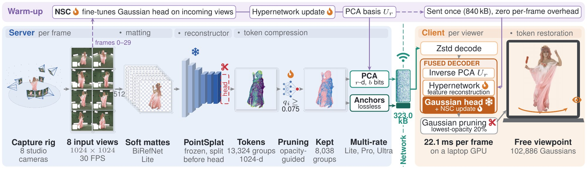
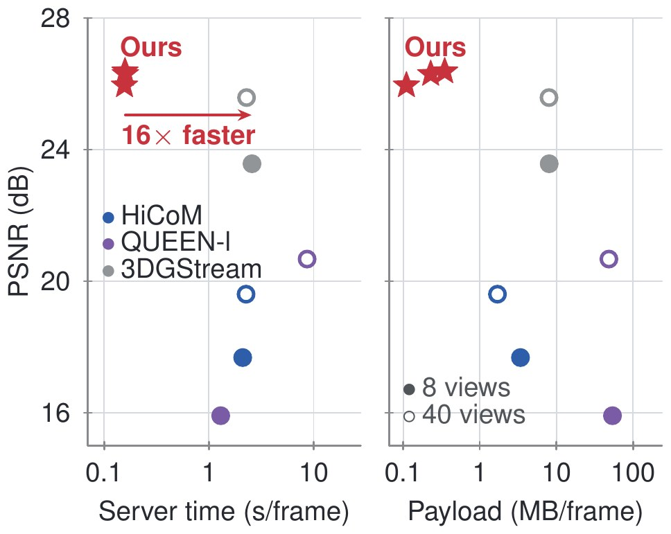
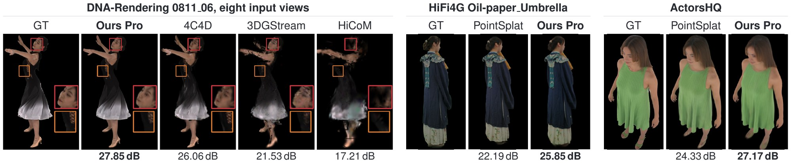

Streamed by HoloSplat Pro from eight cameras and decoded into 3D Gaussians on the client.
Abstract
Live free-viewpoint video streaming of humans enables immersive telepresence and interactive XR applications. However, this requires reconstructing each frame in real time, transmitting the data within strict bandwidth budgets, and decoding it on lightweight client GPUs. Existing approaches, whether relying on per-frame optimization or feed-forward inference, generate massive 3D Gaussian payloads that exceed practical streaming limits, while aggressive compression severely degrades rendering quality. In this work, we present HoloSplat, a real-time streaming framework for human-centric volumetric video. HoloSplat splits a feed-forward reconstructor before its Gaussian head, introducing a multi-rate streaming codec driven by server-side token compression and client-side token restoration. On the server side, we apply opacity-guided token pruning, PCA-based dimensionality reduction, and lossless geometry coding for token anchors. On the client side, a feature reconstruction hypernetwork is fused into the Gaussian head to recover compression-induced quality loss. Furthermore, we introduce Neural Session Calibration (NSC), which rapidly fine-tunes the Gaussian head online using incoming camera views during a warm-up phase. This resolves quality degradation from novel camera parameters and varying capture conditions with zero per-frame overhead. In our evaluations, HoloSplat averages 32.2 FPS on four RTX 5090 GPUs at 50 Mbit/s. It decodes each frame into 3D Gaussians in 22.1 ms on an RTX 3050 Ti laptop GPU, transmitting 22.8× less data than uncompressed float32 Gaussians, while calibrated decoding improves PSNR by 1.050 dB.
Video
Live, End to End
Eight synchronized cameras in, 3D Gaussians out: the server mats and reconstructs every frame, and a WiFi laptop decodes the token packets and renders them at 30 FPS.
Stream Tokens, Not Gaussians

PointSplat fuses eight views into tokens, and each token drives 16 Gaussians through the Gaussian head. Non-linear activations, exponential scaling above all, amplify quantisation error after the head, so we cut the network before it and stream the tokens: the same codec beats post-head attribute compression by 2.8–10.3 dB.
A lightweight predictor scores each token by the opacity of its Gaussians and drops the near-transparent ones before anything is coded.
PCA projects each kept token onto a session basis that is sent once, and the coefficients are quantised to b bits. Lite, Pro and Ultra share one reconstructor and use different token compression settings.
Anchors are coded losslessly: an anchor error would shift a whole group of Gaussians.
Inverse PCA is fused into the Gaussian head, so tokens are never expanded back to 1024 dimensions. A lightweight hypernetwork restores what PCA discards from the kept coefficients, the anchor layout and the eight nearest groups, recovering 80.4% of the compression loss at zero per-frame bitrate.
Neural Session Calibration
During warm-up, the server fits a rank-32 hypernetwork update and a rank-5 Gaussian-head update on the first 30 frames of the incoming views. Both updates are sent once and fused on the client, adding no per-frame bytes or compute.
Free-Viewpoint Streaming at Three Rates
Each tier keeps r PCA coefficients at b bits per token, (r, b) in parentheses. Lite, Pro, and Ultra share one reconstructor and use different token compression settings.
Same Frame, Same Free Viewpoint
Kilobytes per frame and PSNR are sequence averages on DNA-Rendering.
Results

Faster, smaller, better than per-frame optimisation
From the same eight views, every tier of HoloSplat outperforms HiCoM, QUEEN and 3DGStream in PSNR, LPIPS, and bitrate on all 16 DNA-Rendering sequences, while processing each frame 16× faster on average. Even with 40 views, all three trail eight-view Lite in mean PSNR, and offline 4C4D, fitted to all 60 frames at once, is outperformed by Pro on every sequence.

| Method | DNA-Rendering | HiFi4G | ActorsHQ | X-Humans | ||||
|---|---|---|---|---|---|---|---|---|
| PSNR ↑ | kB ↓ | PSNR ↑ | kB ↓ | PSNR ↑ | kB ↓ | PSNR ↑ | kB ↓ | |
| PointSplat512 | 26.169 | 4753.1 | 22.810 | 2564.6 | 24.438 | 10631.7 | 26.189 | 2552.0 |
| Ours Lite (32, 4) | 26.840 | 94.8 | 24.148 | 65.0 | 25.721 | 177.9 | 26.733 | 65.0 |
| Ours Pro (48, 6) | 27.219 | 208.2 | 24.270 | 141.6 | 25.806 | 404.4 | 27.188 | 141.1 |
| Ours Ultra (80, 6) | 27.273 | 321.9 | 24.306 | 219.2 | 25.854 | 628.3 | 27.267 | 217.5 |
BibTeX
@article{li2026holosplat,
title = {HoloSplat: Real-Time Token Streaming for Feed-Forward Human Reconstruction},
author = {Li, Chaofan and Ding, Qihan and Wang, Shihan and Shen, Zhehao and Shen, Boyu and
Chen, Quanyu and Wu, Haoyu and Xu, Lan and Lou, Xin},
journal = {arXiv preprint},
year = {2026}
}